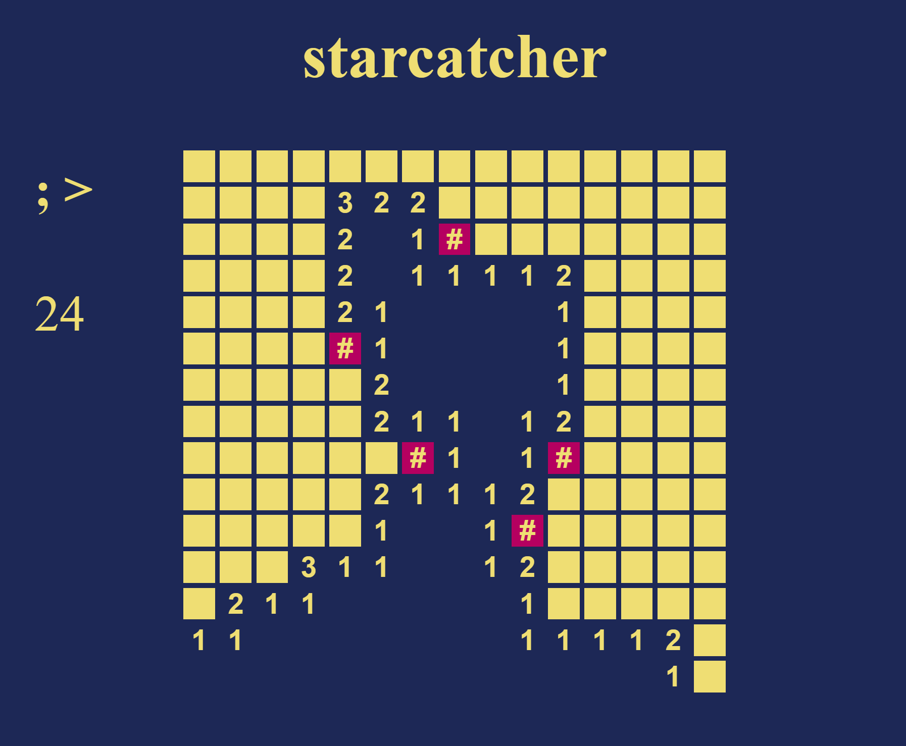
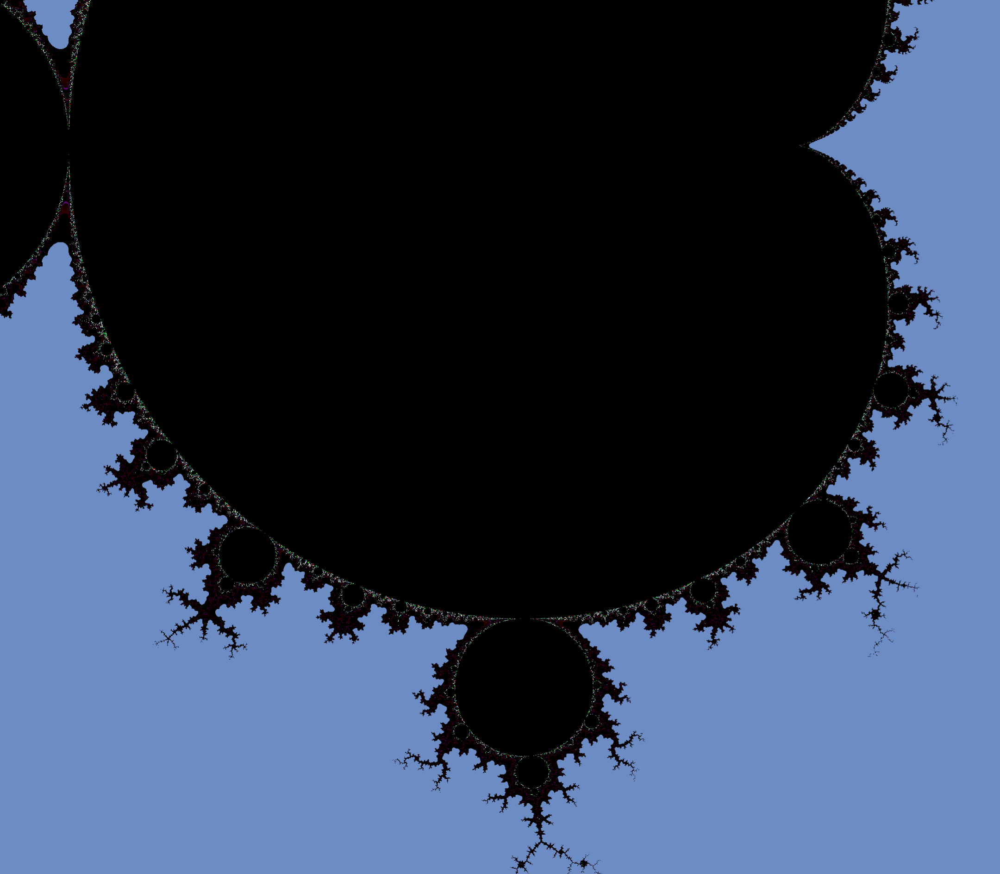

Starcatcher
A simple Minesweeper clone. Allows clicking numbers to solve
surrounding fields if enough flags are set.

Mandelbrot set visualizer
A CPU-based Mandelbrot set visualizer for the web that can
leverage WebAssembly and web workers to achieve okay performance for a non-GPU based algorithm.
